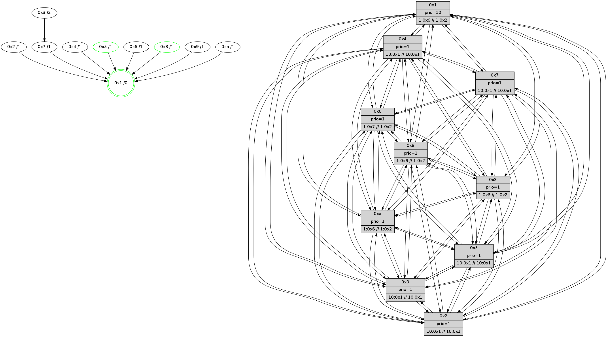

>> << IDX [start] -100 -25 -5 +0 +5 +25 +100 [620.000725985]
 Previous packets
----------------------------------------------------------------------
615.170773 beacon01(faad) #0 coord=01,02,03,04,05,06,07,0a,09,08 cycle=688.0ms assoc
-- color-indic=1 64 a2 d6
615.180755 beacon02(faad) #0 coord=01,02,03,04,05,06,07,0a,09,08 cycle=688.0ms assoc 64 31 e7
615.190755 beacon03(faad) #0 coord=01,02,03,04,05,06,07,0a,09,08 cycle=688.0ms assoc 64 4b aa
615.200756 beacon04(faad) #0 coord=01,02,03,04,05,06,07,0a,09,08 cycle=688.0ms assoc 64 3c 40
615.210757 beacon05(faad) #0 coord=01,02,03,04,05,06,07,0a,09,08 cycle=688.0ms assoc 64 46 0d
615.220757 beacon06(faad) #0 coord=01,02,03,04,05,06,07,0a,09,08 cycle=688.0ms assoc 64 c8 da
615.230757 beacon07(faad) #0 coord=01,02,03,04,05,06,07,0a,09,08 cycle=688.0ms assoc 64 b2 97
615.240760 beacon0a(faad) #0 coord=01,02,03,04,05,06,07,0a,09,08 cycle=688.0ms assoc 64 c3 9c
615.250761 beacon09(faad) #0 coord=01,02,03,04,05,06,07,0a,09,08 cycle=688.0ms assoc 64 4d 4b
615.260760 beacon08(faad) #0 coord=01,02,03,04,05,06,07,0a,09,08 cycle=688.0ms assoc 64 37 06
615.272575 [Hello(2): seq=392 sym=4,5,7,6,3,9,8,10,1 sysInfo=hasWarning stat=4:5,12,13,3/5:0,1,10,4/7:5,2,15,3/6:10,10,14,4/3:13,13,6,1/9:8,5,9,1/8:14,2,8,3/10:9,1,10,3/1:3,5,2,0]
615.275608 [Color(8) seq=75 @0:0 prio=1 >1.@6,1.@7,1.@9,1.@a >>1.@2,1.@3,1.@4]
615.278283 [Hello(7): seq=395 sym=2,3,5,6,4,8,9,10,1 sysInfo= stat=2:6,9,1,8/3:1,3,0,7/5:4,5,15,8/6:4,5,0,0/4:4,11,0,5/8:15,9,2,4/9:11,13,1,7/10:5,3,1,6/1:12,14,8,0]
615.282284 [Color(5) seq=59 @0:0 prio=1 >10.@1,1.@4,1.@6,1.@7 >>10.@1,1.@2,1.@3]
615.286317 [Hello(1): seq=304 sym=4,2,9,5,10,3,8,6,7 sysInfo=coloring-mode-on,ColoringModeRequestCalled stat=4:6,14,2,6/2:6,8,1,7/9:1,0,0,0/5:15,12,3,7/10:14,13,4,6/3:6,6,7,8/8:9,2,8,5/6:0,13,4,4/7:8,5,7,7]
615.296650 [Hello(6): seq=395 sym=2,3,5,4,7,9,8,10,1 sysInfo= stat=2:0,15,3,5/3:7,5,15,5/5:8,5,15,7/4:3,2,15,6/7:1,1,1,0/9:2,2,1,6/8:7,2,15,5/10:10,5,3,5/1:13,3,6,0]
----------------------------------------------------------------------
615.958902 beacon01(faad) #0 coord=01,02,03,04,05,06,07,0a,09,08 cycle=688.0ms assoc
-- color-indic=1 64 1e d3
615.968886 beacon02(faad) #0 coord=01,02,03,04,05,06,07,0a,09,08 cycle=688.0ms assoc 64 8d e2
615.978884 beacon03(faad) #0 coord=01,02,03,04,05,06,07,0a,09,08 cycle=688.0ms assoc 64 f7 af
615.988885 beacon04(faad) #0 coord=01,02,03,04,05,06,07,0a,09,08 cycle=688.0ms assoc 64 80 45
615.998887 beacon05(faad) #0 coord=01,02,03,04,05,06,07,0a,09,08 cycle=688.0ms assoc 64 fa 08
616.008887 beacon06(faad) #0 coord=01,02,03,04,05,06,07,0a,09,08 cycle=688.0ms assoc 64 74 df
616.018885 beacon07(faad) #0 coord=01,02,03,04,05,06,07,0a,09,08 cycle=688.0ms assoc 64 0e 92
616.028890 beacon0a(faad) #0 coord=01,02,03,04,05,06,07,0a,09,08 cycle=688.0ms assoc 64 7f 99
616.038890 beacon09(faad) #0 coord=01,02,03,04,05,06,07,0a,09,08 cycle=688.0ms assoc 64 f1 4e
616.048890 beacon08(faad) #0 coord=01,02,03,04,05,06,07,0a,09,08 cycle=688.0ms assoc 64 8b 03
616.060350 [Hello(9): seq=339 sym=5,2,3,4,7,6,8,10,1 sysInfo=hasWarning stat=5:11,15,11,6/2:3,6,14,5/3:12,10,10,4/4:13,3,11,5/7:3,13,15,2/6:12,3,12,4/8:5,8,1,1/10:9,8,13,6/1:1,7,9,0]
616.063077 [STC(1) #0.41 tree-change,inconsistent-stability,stable,to-color d=0]
616.064390 [Hello(5): seq=396 sym=7,6,4,3,1,9,8,10,2 sysInfo= stat=7:15,8,1,3/6:4,5,0,4/4:11,5,10,4/3:8,14,8,2/1:8,11,8,0/9:8,9,13,3/8:8,12,8,4/10:8,15,13,4/2:4,12,11,3]
616.067472 [Hello(3): seq=396 sym=1,7,6,2,4,8,9,10,5 sysInfo= stat=1:9,12,10,0/7:1,0,11,3/6:10,3,9,5/2:1,6,11,7/4:12,3,12,4/8:12,5,9,1/9:1,5,15,5/10:15,5,10,4/5:0,13,13,5]
616.070080 [Color(1) seq=76 @0:0 prio=10 >1.@6,1.@7,1.@8,1.@9 >>1.@2,1.@3,1.@4]
616.073184 [Hello(8): seq=339 sym=5,2,3,4,7,6,9,10,1 sysInfo=coloring-mode-on,ColoringModeIndicationCalled stat=5:12,15,12,5/2:12,14,2,0/3:3,2,12,6/4:7,5,14,5/7:13,10,15,4/6:8,9,12,5/9:2,4,15,4/10:15,13,11,5/1:14,10,10,0]
616.076456 [Hello(10): seq=328 sym=6,2,3,8,9,5,7,4,1 sysInfo= stat=6:10,10,0,0/2:10,14,3,1/3:3,1,4,1/8:5,6,12,5/9:3,5,10,3/5:7,15,9,5/7:3,11,11,2/4:0,6,8,6/1:7,4,8,0]
616.081893 [Hello(4): seq=396 sym=5,7,6,2,3,9,8,10,1 sysInfo= stat=5:15,6,12,6/7:10,4,14,2/6:0,10,14,5/2:9,7,10,6/3:3,11,5,2/9:4,13,10,3/8:10,12,14,6/10:1,0,14,5/1:6,8,10,0]
----------------------------------------------------------------------
616.747033 beacon01(faad) #0 coord=01,02,03,04,05,06,07,0a,09,08 cycle=688.0ms assoc
-- color-indic=1 64 b9 a3
616.757015 beacon02(faad) #0 coord=01,02,03,04,05,06,07,0a,09,08 cycle=688.0ms assoc 64 2a 92
616.767016 beacon03(faad) #0 coord=01,02,03,04,05,06,07,0a,09,08 cycle=688.0ms assoc 64 50 df
616.777016 beacon04(faad) #0 coord=01,02,03,04,05,06,07,0a,09,08 cycle=688.0ms assoc 64 27 35
616.787015 beacon05(faad) #0 coord=01,02,03,04,05,06,07,0a,09,08 cycle=688.0ms assoc 64 5d 78
616.797016 beacon06(faad) #0 coord=01,02,03,04,05,06,07,0a,09,08 cycle=688.0ms assoc 64 d3 af
616.807017 beacon07(faad) #0 coord=01,02,03,04,05,06,07,0a,09,08 cycle=688.0ms assoc 64 a9 e2
616.817020 beacon0a(faad) #0 coord=01,02,03,04,05,06,07,0a,09,08 cycle=688.0ms assoc 64 d8 e9
616.827021 beacon09(faad) #0 coord=01,02,03,04,05,06,07,0a,09,08 cycle=688.0ms assoc 64 56 3e
616.837025 beacon08(faad) #0 coord=01,02,03,04,05,06,07,0a,09,08 cycle=688.0ms assoc 64 2c 73
616.848582 [STC(9)->1 #0.41 tree-change,inconsistent-stability,to-color d=1]
616.851097 [Hello(7): seq=396 sym=2,3,5,6,4,8,9,10,1 sysInfo= stat=2:6,9,1,8/3:2,3,0,7/5:5,6,15,8/6:5,5,0,0/4:5,11,0,5/8:0,9,2,4/9:12,13,1,7/10:6,3,1,6/1:13,15,9,0]
616.853598 [Color(8) seq=76 @0:0 prio=1 >1.@6,1.@7,1.@9,1.@a >>1.@2,1.@3,1.@4]
616.856366 [Hello(6): seq=396 sym=2,3,5,4,7,9,8,10,1 sysInfo= stat=2:0,15,3,5/3:8,5,15,5/5:9,5,15,7/4:4,2,15,6/7:1,1,1,0/9:3,2,1,6/8:8,2,15,5/10:11,5,3,5/1:13,4,7,0]
616.860025 [Hello(2): seq=393 sym=4,5,7,6,3,9,8,10,1 sysInfo=hasWarning stat=4:6,12,13,3/5:1,2,10,4/7:6,2,15,3/6:11,10,14,4/3:14,13,6,1/9:9,5,9,1/8:15,3,8,3/10:10,1,10,3/1:4,6,3,0]
616.863469 [STC(7)->1 #0.41 tree-change,inconsistent-stability,to-color d=1]
616.868750 [Color(5) seq=60 @0:0 prio=1 >10.@1,1.@4,1.@6,1.@7 >>10.@1,1.@2,1.@3]
616.871276 [STC(6)->1 #0.41 tree-change,inconsistent-stability,to-color d=1]
616.880839 [STC(2)->1 #0.41 tree-change,inconsistent-stability,to-color d=1]
----------------------------------------------------------------------
617.535163 beacon01(faad) #0 coord=01,02,03,04,05,06,07,0a,09,08 cycle=688.0ms assoc
-- color-indic=1 64 05 a6
617.545146 beacon02(faad) #0 coord=01,02,03,04,05,06,07,0a,09,08 cycle=688.0ms assoc 64 96 97
617.555145 beacon03(faad) #0 coord=01,02,03,04,05,06,07,0a,09,08 cycle=688.0ms assoc 64 ec da
617.565146 beacon04(faad) #0 coord=01,02,03,04,05,06,07,0a,09,08 cycle=688.0ms assoc 64 9b 30
617.575147 beacon05(faad) #0 coord=01,02,03,04,05,06,07,0a,09,08 cycle=688.0ms assoc 64 e1 7d
617.585148 beacon06(faad) #0 coord=01,02,03,04,05,06,07,0a,09,08 cycle=688.0ms assoc 64 6f aa
617.595146 beacon07(faad) #0 coord=01,02,03,04,05,06,07,0a,09,08 cycle=688.0ms assoc 64 15 e7
617.605151 beacon0a(faad) #0 coord=01,02,03,04,05,06,07,0a,09,08 cycle=688.0ms assoc 64 64 ec
617.615151 beacon09(faad) #0 coord=01,02,03,04,05,06,07,0a,09,08 cycle=688.0ms assoc 64 ea 3b
617.625152 beacon08(faad) #0 coord=01,02,03,04,05,06,07,0a,09,08 cycle=688.0ms assoc 64 90 76
617.636563 [Hello(3): seq=397 sym=1,7,6,2,4,8,9,10,5 sysInfo= stat=1:10,13,10,0/7:2,0,12,3/6:11,3,10,5/2:2,6,12,7/4:13,3,12,4/8:13,6,9,1/9:1,5,15,5/10:0,5,10,4/5:0,14,13,5]
617.639295 [Color(1) seq=77 @0:0 prio=10 >1.@6,1.@7,1.@8,1.@9 >>1.@2,1.@3,1.@4]
617.642226 [Hello(9): seq=340 sym=5,2,3,4,7,6,8,10,1 sysInfo=hasWarning stat=5:12,0,11,6/2:4,6,15,5/3:13,10,10,4/4:14,3,11,5/7:4,13,0,2/6:13,3,13,4/8:6,9,1,1/10:10,8,13,6/1:1,8,10,0]
617.647778 [Hello(10): seq=329 sym=6,2,3,8,9,5,7,4,1 sysInfo= stat=6:11,10,1,0/2:11,14,4,1/3:3,1,4,1/8:5,7,12,5/9:3,5,10,3/5:7,0,9,5/7:4,11,12,2/4:1,6,8,6/1:8,4,8,0]
617.650238 [STC(3)->7-.->1 #0.41 tree-change,inconsistent-stability,to-color d=2]
617.654079 [Hello(8): seq=340 sym=5,2,3,4,7,6,9,10,1 sysInfo=hasWarning,coloring-mode-on,ColoringModeIndicationCalled stat=5:12,0,12,5/2:13,14,3,0/3:3,2,12,6/4:8,5,14,5/7:13,10,0,4/6:9,9,13,5/9:2,4,0,4/10:0,13,11,5/1:14,10,10,0]
----------------------------------------------------------------------
618.323295 beacon01(faad) #0 coord=01,02,03,04,05,06,07,0a,09,08 cycle=688.0ms assoc
-- color-indic=1 64 c1 a8
618.333277 beacon02(faad) #0 coord=01,02,03,04,05,06,07,0a,09,08 cycle=688.0ms assoc 64 52 99
618.343279 beacon03(faad) #0 coord=01,02,03,04,05,06,07,0a,09,08 cycle=688.0ms assoc 64 28 d4
618.353276 beacon04(faad) #0 coord=01,02,03,04,05,06,07,0a,09,08 cycle=688.0ms assoc 64 5f 3e
618.363279 beacon05(faad) #0 coord=01,02,03,04,05,06,07,0a,09,08 cycle=688.0ms assoc 64 25 73
618.373278 beacon06(faad) #0 coord=01,02,03,04,05,06,07,0a,09,08 cycle=688.0ms assoc 64 ab a4
618.383279 beacon07(faad) #0 coord=01,02,03,04,05,06,07,0a,09,08 cycle=688.0ms assoc 64 d1 e9
618.393282 beacon0a(faad) #0 coord=01,02,03,04,05,06,07,0a,09,08 cycle=688.0ms assoc 64 a0 e2
618.403284 beacon09(faad) #0 coord=01,02,03,04,05,06,07,0a,09,08 cycle=688.0ms assoc 64 2e 35
618.413284 beacon08(faad) #0 coord=01,02,03,04,05,06,07,0a,09,08 cycle=688.0ms assoc 64 54 78
618.424459 [Hello(7): seq=397 sym=2,3,5,6,4,8,9,10,1 sysInfo= stat=2:6,9,2,8/3:3,3,1,7/5:6,7,15,8/6:5,5,1,0/4:5,11,0,5/8:1,9,2,4/9:13,13,1,7/10:7,3,1,6/1:13,0,9,0]
618.427223 [Color(8) seq=77 @0:0 prio=1 >1.@6,1.@7,1.@9,1.@a >>1.@2,1.@3,1.@4]
618.429796 [Color(5) seq=61 @0:0 prio=1 >10.@1,1.@4,1.@6,1.@7 >>10.@1,1.@2,1.@3]
618.432728 [Hello(6): seq=397 sym=2,3,5,4,7,9,8,10,1 sysInfo= stat=2:0,15,4,5/3:9,5,0,5/5:9,5,15,7/4:5,2,15,6/7:1,1,1,0/9:4,2,1,6/8:9,2,15,5/10:12,5,3,5/1:13,5,7,0]
618.437455 [Hello(2): seq=394 sym=4,5,7,6,3,9,8,10,1 sysInfo=hasWarning stat=4:7,12,13,3/5:1,2,10,4/7:6,2,15,3/6:11,10,14,4/3:15,13,7,1/9:10,5,9,1/8:0,3,8,3/10:11,1,10,3/1:4,7,3,0]
618.442532 [Hello(1): seq=306 sym=4,2,9,5,10,3,8,6,7 sysInfo=coloring-mode-on,ColoringModeRequestCalled stat=4:7,14,2,6/2:7,8,2,7/9:3,0,0,0/5:0,13,3,7/10:0,13,4,6/3:7,6,8,8/8:11,3,8,5/6:2,13,5,4/7:9,5,8,7]
----------------------------------------------------------------------
619.111424 beacon01(faad) #0 coord=01,02,03,04,05,06,07,0a,09,08 cycle=688.0ms assoc
-- color-indic=1 64 7d ad
619.121407 beacon02(faad) #0 coord=01,02,03,04,05,06,07,0a,09,08 cycle=688.0ms assoc 64 ee 9c
619.131407 beacon03(faad) #0 coord=01,02,03,04,05,06,07,0a,09,08 cycle=688.0ms assoc 64 94 d1
619.141408 beacon04(faad) #0 coord=01,02,03,04,05,06,07,0a,09,08 cycle=688.0ms assoc 64 e3 3b
619.151407 beacon05(faad) #0 coord=01,02,03,04,05,06,07,0a,09,08 cycle=688.0ms assoc 64 99 76
619.161406 beacon06(faad) #0 coord=01,02,03,04,05,06,07,0a,09,08 cycle=688.0ms assoc 64 17 a1
619.171408 beacon07(faad) #0 coord=01,02,03,04,05,06,07,0a,09,08 cycle=688.0ms assoc 64 6d ec
619.181412 beacon0a(faad) #0 coord=01,02,03,04,05,06,07,0a,09,08 cycle=688.0ms assoc 64 1c e7
619.191411 beacon09(faad) #0 coord=01,02,03,04,05,06,07,0a,09,08 cycle=688.0ms assoc 64 92 30
619.201414 beacon08(faad) #0 coord=01,02,03,04,05,06,07,0a,09,08 cycle=688.0ms assoc 64 e8 7d
619.212640 [Hello(5): seq=398 sym=7,6,4,3,1,9,8,10,2 sysInfo= stat=7:0,8,1,3/6:5,5,1,4/4:12,5,10,4/3:9,14,9,2/1:9,12,8,0/9:8,9,14,3/8:10,12,8,4/10:10,15,13,4/2:5,12,12,3]
619.215605 [Hello(10): seq=330 sym=6,2,3,8,9,5,7,4,1 sysInfo= stat=6:12,10,1,0/2:12,14,4,1/3:3,1,5,1/8:6,8,12,5/9:3,5,10,3/5:7,1,9,5/7:5,11,12,2/4:1,6,8,6/1:9,4,8,0]
619.219885 [Hello(3): seq=398 sym=1,7,6,2,4,8,9,10,5 sysInfo= stat=1:11,13,10,0/7:3,0,12,3/6:12,3,10,5/2:3,6,12,7/4:13,3,12,4/8:14,7,9,1/9:1,5,15,5/10:0,5,10,4/5:0,15,13,5]
619.227051 [Hello(4): seq=398 sym=5,7,6,2,3,9,8,10,1 sysInfo= stat=5:15,8,12,6/7:12,4,15,2/6:2,10,15,5/2:11,7,11,6/3:3,11,6,2/9:4,13,11,3/8:11,14,14,6/10:2,0,14,5/1:7,8,10,0]
619.230030 [Color(1) seq=78 @0:0 prio=10 >1.@6,1.@7,1.@8,1.@9 >>1.@2,1.@3,1.@4]
----------------------------------------------------------------------
619.899555 beacon01(faad) #0 coord=01,02,03,04,05,06,07,0a,09,08 cycle=688.0ms assoc
-- color-indic=1 64 49 b5
619.909538 beacon02(faad) #0 coord=01,02,03,04,05,06,07,0a,09,08 cycle=688.0ms assoc 64 da 84
619.919536 beacon03(faad) #0 coord=01,02,03,04,05,06,07,0a,09,08 cycle=688.0ms assoc 64 a0 c9
619.929537 beacon04(faad) #0 coord=01,02,03,04,05,06,07,0a,09,08 cycle=688.0ms assoc 64 d7 23
619.939538 beacon05(faad) #0 coord=01,02,03,04,05,06,07,0a,09,08 cycle=688.0ms assoc 64 ad 6e
619.949538 beacon06(faad) #0 coord=01,02,03,04,05,06,07,0a,09,08 cycle=688.0ms assoc 64 23 b9
619.959539 beacon07(faad) #0 coord=01,02,03,04,05,06,07,0a,09,08 cycle=688.0ms assoc 64 59 f4
619.969542 beacon0a(faad) #0 coord=01,02,03,04,05,06,07,0a,09,08 cycle=688.0ms assoc 64 28 ff
619.979543 beacon09(faad) #0 coord=01,02,03,04,05,06,07,0a,09,08 cycle=688.0ms assoc 64 a6 28
619.989542 beacon08(faad) #0 coord=01,02,03,04,05,06,07,0a,09,08 cycle=688.0ms assoc 64 dc 65